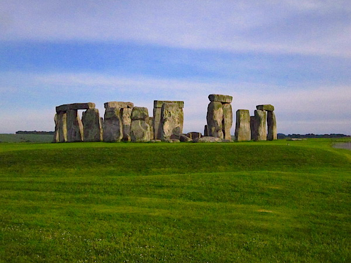

Salacious Stories
The Day Stonehenge Almost Got Away
My family’s trip through the UK and Ireland was quite the whirlwind. And, since I learned about a year ago that Americans and Brits use “quite” differently, let me specify: our trip was ridiculously, over-the-top-edly rushed beyond proportion. We went from London to Wales to Dublin to Galway to Limerick to Cork back to Dublin to Edinburgh to Glasgow to Newcastle-Upon-Tyne to Nottingham and back to London in 11 days.
11 days.
I dare you to come up with a crazier itinerary.
We arrived in London late the night before, which gave my dad a chance adjust to manual transmission, steering wheel on the right, driving on the right, and roundabouts the wrong way round, all in the dark when he was exhausted.
All-in-all, a promising start.
Our first full day, we went to the train station, bought tickets from a very friendly African woman we couldn’t understand in the slightest, and then got on the soonest train. Turns out, our tickets didn’t actually authorize us to take that particular train, and we got stuck behind a very stubborn turnstile at St. Pancras. The austere man who rescued us scolded us until he realized that we were americans, and then just rolled his eyes and swiped us through.
I guess there are some perks to being viewed as the dumbest country on earth.
Like any self-respecting Americans in London for the first time, we made a beeline for Platform 9 3/4, took all the obligatory photos, drooled over movie paraphernalia, and then searched out Information so that we could get a map of London and plan the most efficient route to see as many things as we could with only about 3 hours before we had to leave.

Now, in most of the French train stations we’d been to during the previous week, there were large and well-marked information booths to cater to us dumb americans who could recommend to us the best things to do in a short time. In St Pancras? We made our way further and further and further into the depths of the station until we found a tiny little hole in the wall with a man who was frankly surprised to see anyone open his doors. He and another attendant who was keeping the first man occupied because he had nothing else to do were actually quite helpful and even said that the Queen would be passing through at some point that afternoon said that if we hung around that we might see her. It took a while for them to convince us, though. We were pretty convinced that they were trying to prank the Americans.
The rest of the time we spent in London was unremarkable. We wandered a bit on foot, took pictures, and got milkshakes, then headed back to our hotel to leave an hour to get Stonehenge, which we thought would be plenty of time for our 5:30 reservation.
We forgot about traffic.
I mean, we were on vacation, who would be thinking about traffic? Because of that, a one-hour trip ended up taking us 2 1/2 hours, and we got to Stonehenge 10 minutes before the entire site was supposed to close. We drove up to the gate when we got there, anyway, as that was our only chance to see Stonehenge. We were gonna spend that night and the next day in Cardiff, Wales, and then fly to Dublin the next morning. So, driving up despite being almost two hours late, as the gates were closing was a hail-mary.
But it worked.
When we explained to the guard why we were late, and about our restrictive itinerary, he actually took pity on us and started radio-ing all his people. We waited anxiously for the guard to hear back from his colleagues while the guard regaled us with hysterical stories of his two sons. After what felt like an eternity of fingernail biting and laughing nervously at the guard’s stories, he informed us that the shuttle driver that took people from the info center out to the actual site was officially off the clock but still around and had agreed to drive us out there if we were quick about it. So we hopped on the shuttle, thanked the driver profusely, and finally made it to Stonehenge.
Since the guard had said that we needed to be quick, my dad and I actually ran around the whole path, stopping every so often to snap some pictures of the stones from every different angle. My mom and my sister didn’t, but everything turned out ok since my dad kept the shuttle driver occupied with middle-aged man talk. And then, since they ended up best friends, the shuttle driver offered to take some family photos before he took us back to spend money at their gift shop.
We finished off the day on little roads to Cardiff, where we found a fantastic little pub called “Oliver Cromwell who served us even though they were just about closed, around 9:00. They had the best onion rings I’d ever had, and stayed and chatted with us for a while about recommendations of things to see and eat and drink for the rest of our trip around the UK and Ireland. We even left with some pig’s ears, or some pub specialty like that. We kept meaning to get drunk enough to try some, but never actually got around to it.
All in all, the day was a success.